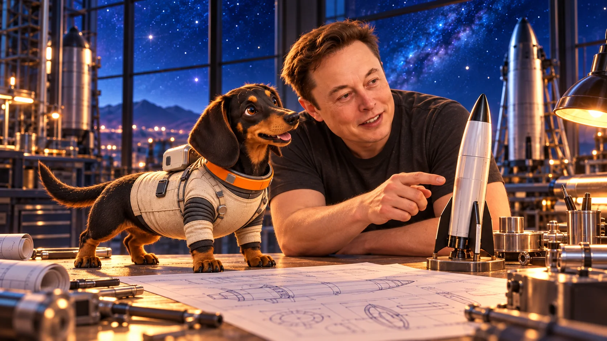
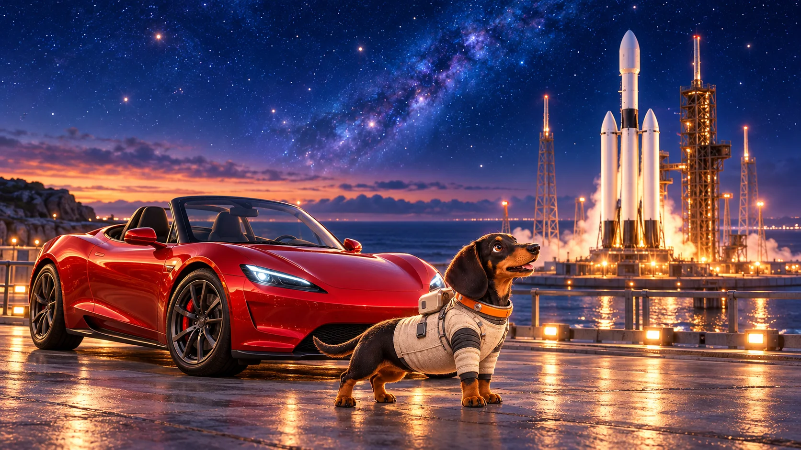
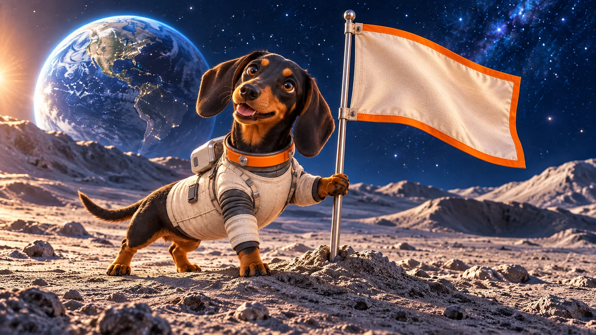
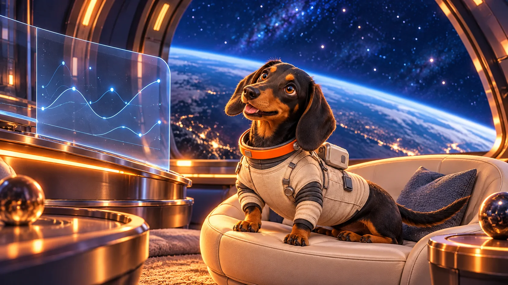

It starts with a little dog joke and ends somewhere much bigger: orbit. Around Elon Musk, dogs, rockets, music, and internet culture have a way of collapsing into the same timeline.
I'd tell people "watch out for the dog!", then they'd see him and laugh, then he would bite them on the ankle.
Once had a Great Dane named Hamlet, because Hamlet was a great Dane
Elon Musk's mom had previously mentioned that he had a dachshund growing up. The Bowie angle gives that childhood dog story a name and a surprisingly good meme engine.

Walter Isaacson's biography gave the lore a sharper outline: young Elon had a dachshund named Bowie, named after David Bowie. It is a tiny detail, but the kind of tiny detail the internet knows how to launch.
Then the signal goes to space.
David Bowie was already the perfect cultural bridge for this story. Starman, astronauts, Mars, alien glam, and songs about drifting beyond Earth were baked into his mythology long before the web turned every great image into a meme.

The original article points readers toward the space-culture moment where a Tesla Roadster, Falcon Heavy, and David Bowie references became one global image.
Open Video SourceWhen SpaceX launched a Tesla Roadster on Falcon Heavy, the image felt like science fiction made public. The Roadster, the spacesuit, the soundtrack, and the phrase "Starman" all pulled David Bowie's orbit back into the conversation.

That is why Bowie works as a meme character. The dog is small, the story is oddly specific, and the surrounding references are huge: biography, family posts, music history, rockets, and one of the most replayed launch images of the internet era.
The long dog goes long.
$BOWIE compresses that whole chain into one clean idea: a dachshund with a space mission. It does not need a complicated backstory because the backstory already has its own gravity.

This version keeps the article focused on story and media flow, without platform chrome or mixed token notes. The project signal stays consistent with the main site.